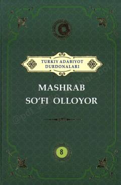

MO‘zbek mumtoz she’riyatining yirik vakili Rahimbobo Mashrab hayoti va ijodiga bag‘ishlangan adabiy to‘plam.
Ushbu kitob turkiy xalqlar adabiyoti durdonalari turkumidan o‘rin olgan bo‘lib, o‘zbek mumtoz she’riyatining yirik vakili Rahimbobo Mashrab ijodiga bag‘ishlangan. Asarda shoirning hayot yo‘li, ijodiy merosi va uning she’riyatidagi o‘ziga xos ohanglar hamda janrlar tahlil qilinadi.